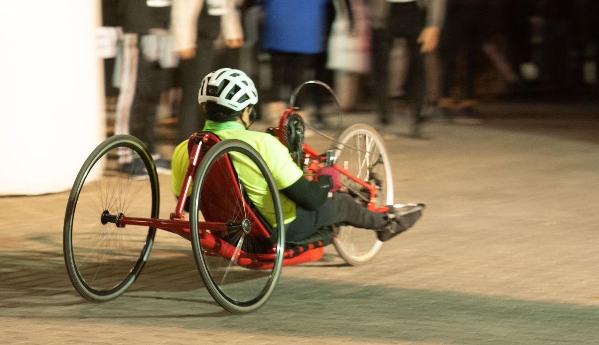

Las dos grandes figuras del atletismo español eran favoritos para conseguir medalla en 1.500m y 3.000m en la cita de Estambul del 3 al 6 de marzo, al igual que Mariano García, el campeón mundial de 800m, que aún no ha decidido qué hacer. Son, quizás, los mejores de Europa pero quieren ser los mejores del mundo. Por eso, anuncian, para preparar mejor el campeonato del mundo de Budapest al aire libre (18 a 27 de agosto), van a acortar la temporada en pista cubierta, en la que son imbatibles, y renuncian a participar en los Europeos indoor de Estambul (3 a 6 de marzo) y, de paso, al campeonato nacional (17 a 19 de febrero). Son mediofondistas.
La Media Maratón Ciudad de Mendoza 2023 dispone de un descuento del 50% en su inscripción para personas con discapacidad y atletismo asistido. Así lo ha establecido, como en años anteriores, incentivando su participación e inclusión en competencias deportivas.
Las inscripciones ya están abiertas y, para obtener el beneficio, las personas interesadas deberán presentar el certificado de discapacidad junto a la solicitud de descuento por el mail info@mediamaratondemendoza.com.ar.
Por su parte, los acompañantes de los atletas que necesiten asistencia podrán inscribirse sin costo en la plataforma de la Media Maratón y recibirán un dorsal guía que les permitirá ingresar al parque cerrado de largada y llegada. Es importante destacar que no contarán con la remera oficial del evento ni con medalla de finisher.